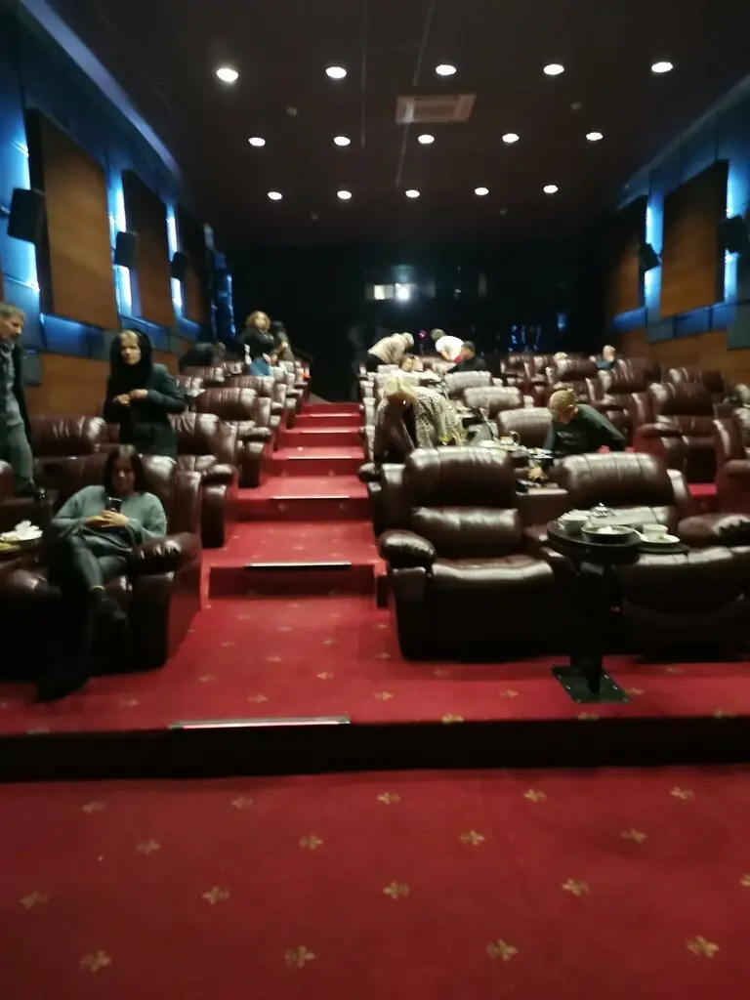
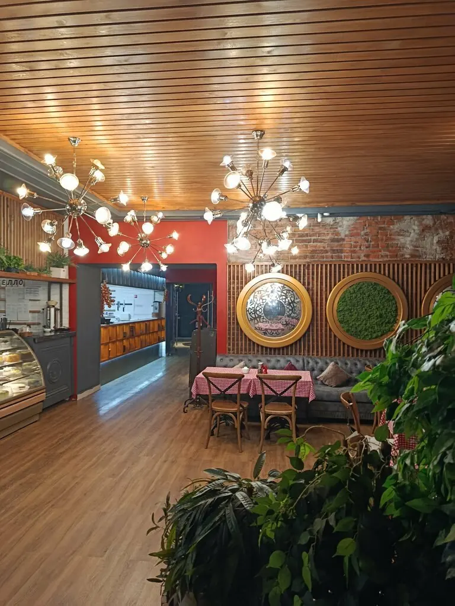
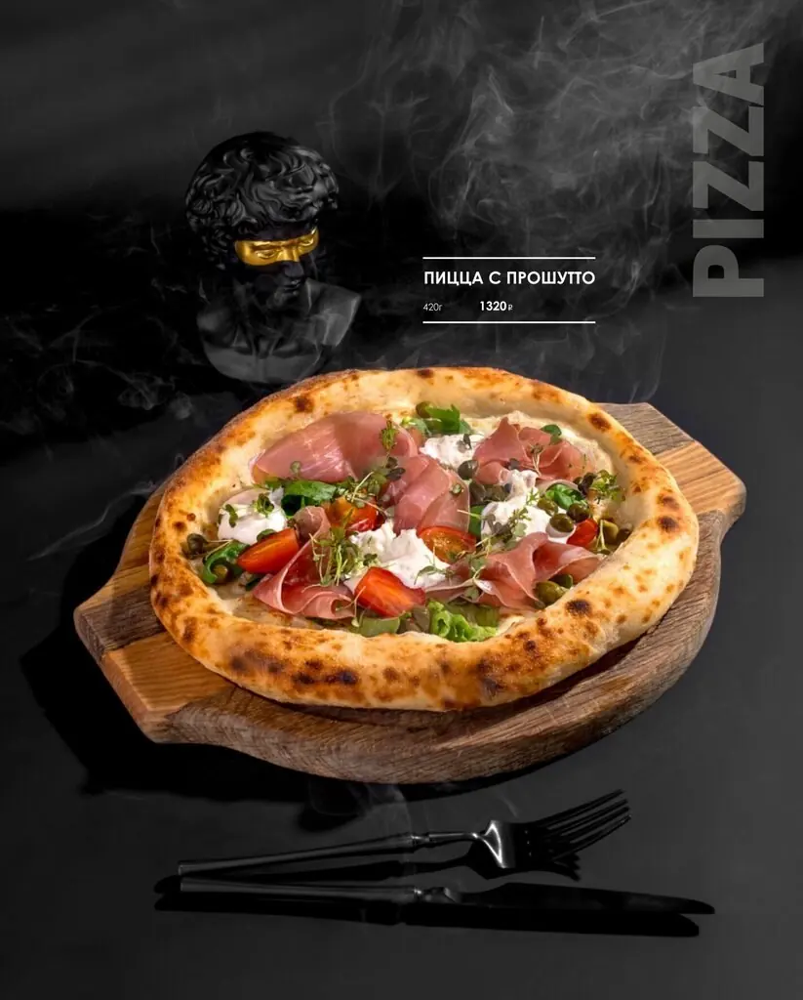
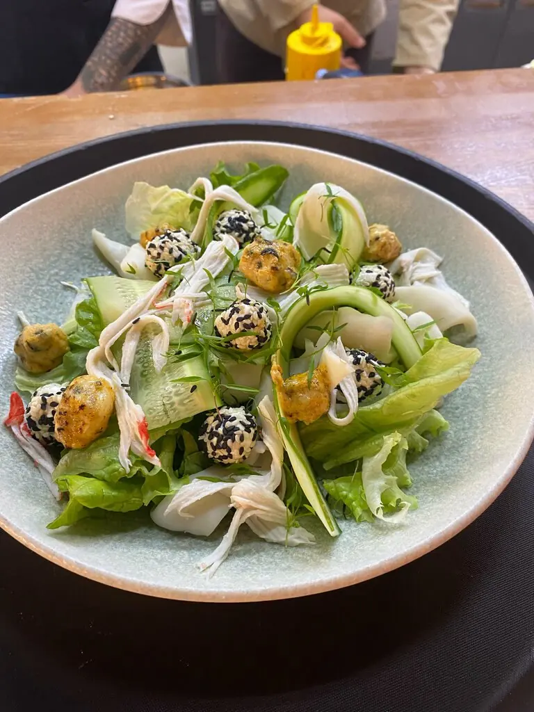
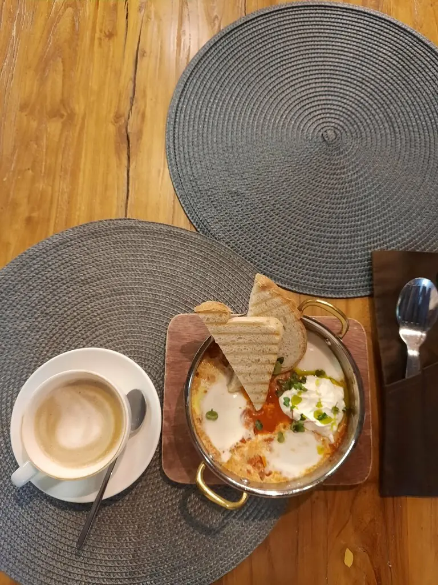
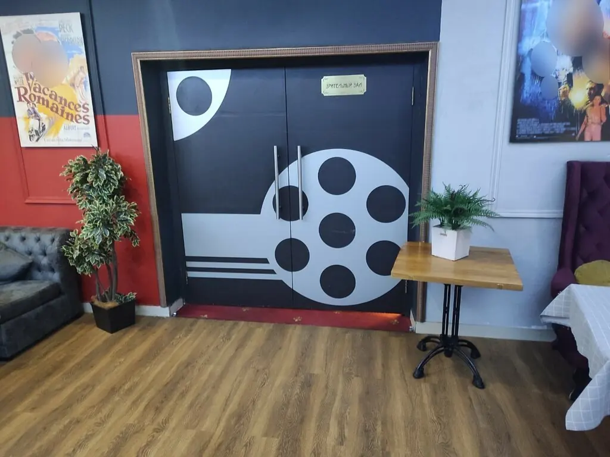

Киноклуб представляет
Don Otello
Кино, ужин и хорошая компания под одной крышей. Выбирайте столик так же, как места в зале: заранее и получше.
5,0 · 501 оценка
Сегодня в программе
Утренний сеанс
Завтрак
Каша рисовая240 ₽
Сырники с вишнёвым вареньемпо меню
Гости пишут, что вкуснее не пробовали.
Дневной сеанс
Паста и брускетты
Паста карбонара637 ₽
Паста с лососем1 027 ₽
Брускетта с трюфелем и говядиной1 248 ₽
Брускетта с креветками806 ₽
Вечерний сеанс
Пицца и роллы
Пицца карбонара806 ₽
Пицца Том ям1 677 ₽
Филадельфия1 118 ₽
Темпура с креветкой897 ₽
Часть меню с Яндекс Карт, цены уточняйте у официанта.

Без попкорна в зубах
Кирпич, киноафиши, катушка на двери и зал всего на 50 мест. Здесь удобно посидеть до сеанса, после него или вместо.




Рецензии
Таких вкусных сырников с вишнёвым вареньем и сметаной мы нигде не пробовали.Антон Дзех
Хороший ресторан, вкусные десерты и коктейли, очень вежливый персонал!Elizaveta
Приходите в это заведение, здесь очень красиво и вкусно.Наталья